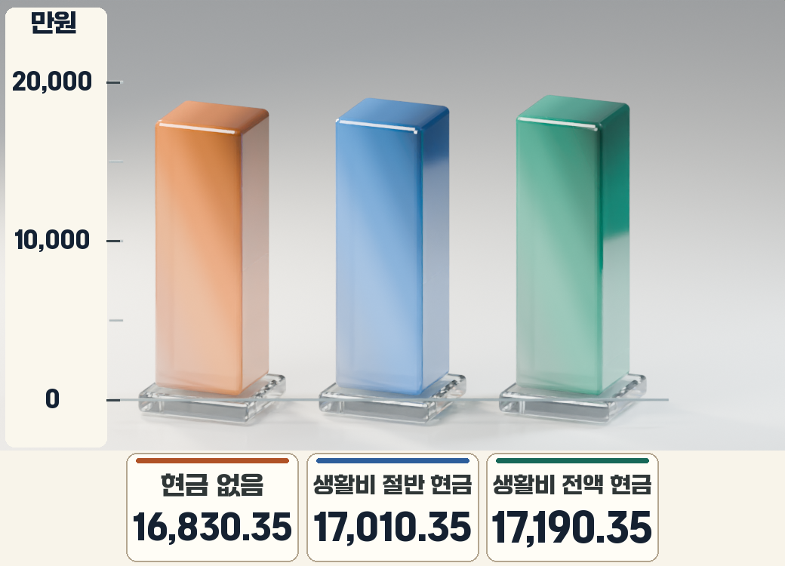

다음 달 월급 칸이
비었어!
비었어!

첫 연금 들어오는
날부터 확인하자.
날부터 확인하자.
퇴직 뒤 첫 달 달력
월급 지급 종료
생활비 납부일 확인
연금 첫 입금일 확인
은퇴 직전 투자 자산이 15% 하락하면
같은 시작 잔액 2억 2,624만 원 · 첫해 생활비 2,400만 원

첫해 생활비를 모두 낸 뒤의 잔액 · 원화 가상 예시 · 세금·비용 제외
시장에 남겨 둔 돈만 하락한다고 가정했어요.
월급 지급 종료
생활비 납부일 확인
연금 첫 입금일 확인
같은 시작 잔액 2억 2,624만 원 · 첫해 생활비 2,400만 원

첫해 생활비를 모두 낸 뒤의 잔액 · 원화 가상 예시 · 세금·비용 제외
시장에 남겨 둔 돈만 하락한다고 가정했어요.